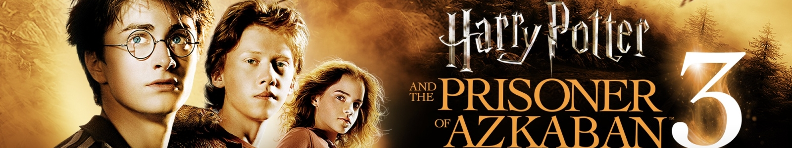

- Daniel Radcliffe ... Harry Potter
- Gary Oldman ... Sirius Black
- Rupert Grint ... Ron Weasley
- Emma Watson ... Hermione Granger
- Michael Gambon ... Albus Dumbledore
- Alan Rickman ... Professor Severus Snape

Kötü Marge hala gece havada süzülmeye başladığında, Harry Hogwarts'daki 3. yılında neler olacağını düşünmeye başlar. "Hızır Otobüs"le yaptığı yorucu yolculuk onu Diagon Yolu'na getirir ve burada hapishane kaçkını Sirius Black'in kendisi için geldiğini öğrenir. Böylece yeni okul dönemi başlar. Hogwarts'ta Harry ve arkadaşları bir Hipogrif'e yaklaşmanın hassas sanatını, şekil değiştiren böcürtleri, hatta zamanda nasıl geriye gidileceğini ve patronus büyüsünü öğrenirler.